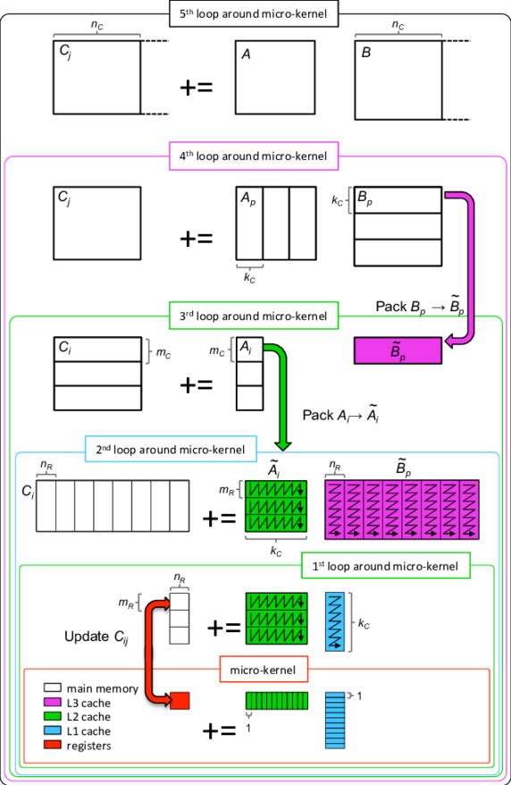

BLAS
Table of Contents
1. BLAS
1.1. gemm
1.1.1. 拆分方法
https://www.cs.utexas.edu/users/flame/pubs/GotoTOMS_final.pdf

A 为 M x K, B 为 K x N
- A, B 拆分成较小的 A' (M_c x K_c) 和 B' (K_c x N_c), A' 在 l2 cache, B'在 l3 cache
- A', B' 拆分为更小的 A'' (M_r x K_c) 和 B'' (K_c x N_r), B'' 在 l1 cache, M_r/N_r 的典型值为 2
- 计算 A'' x B'' 时使用了 `列 dot 行`的形式 , 所以 A' 需要以 M_r 为单位纵向 pack, B' 需要以 N_r 为单位横向 pack, 以便读数据时能利用 l1 cache
1.1.2. 关于 M_c, N_c, K_c, M_r, N_r 的取值
- K_c 和 N_c 取决于 l3 cache
- K_c 和 M_c 取决于 l2 cache
- K_c 和 M_r, N_r 取决于 l1 cache
openblas 使用 GEBP 类型的 kernel, N_c 通常较大, 例如 4K. M_c/K_c 较小, 例如 128/256.
1.1.3. 关于 pack
假设 M_c=N_c=K_c = 4, M_r=N_r=2, openblas pack 的结果为:
pack 之前: A': (矩阵的值, 非内存中的布局) 0.170828 0.577304 0.873904 0.732520 0.749902 0.785799 0.745095 0.260222 0.096372 0.692194 0.446046 0.394294 0.870465 0.368766 0.353728 0.776790 B': 0.845035 0.455825 0.568585 0.275509 0.575788 0.109947 0.959066 0.260361 0.715539 0.545228 0.867719 0.924095 0.083004 0.390687 0.163190 0.435923 pack 之后: A'': (gdb) x /8fg ba 0x7fffefd7d000: 0.17082803610628972 0.74990198048496381 0x7fffefd7d010: 0.57730350679510778 0.78579925883967405 0x7fffefd7d020: 0.87390407686180893 0.74509509845006505 0x7fffefd7d030: 0.73251963200253911 0.26022200108288018 B'': (gdb) x /8fg bb 0x7fffefd9d000: 0.84503513758028603 0.45582512865975744 0x7fffefd9d010: 0.57578820048277635 0.10994681418064545 0x7fffefd9d020: 0.71553859516866325 0.54522802381657343 0x7fffefd9d030: 0.083004246073876686 0.39068657064867551
1.1.4. openblas gemm kernel
openblas SGEMMKERNEL 计算的是 packed A' x packed B', 所以 gemm kernel 需要先通过 SGEMMONCOPY/SGEMMOTCOPY 进行 pack, 且 COPY 和 SGEMMKERNEL 需要对应相同的 M_r/N_r, 否则数据的布局会对应不上.
openblas 中的 param.h 中定义了以上几个值:
- SGEMM_DEFAULT_P 对应 M_c
- SGEMM_DEFAULT_Q 对应 K_c
- SGEMM_DEFAULT_R 对应 N_c
- SGEMM_DEFAULT_UNROLL_M 对应 M_r
- SGEMM_DEFAULT_UNROLL_N 对应 N_r
以 gemmkernel_2x2.c 为例:
int CNAME( BLASLONG bm, BLASLONG bn, BLASLONG bk, FLOAT alpha, IFLOAT* ba, IFLOAT* bb, FLOAT* C, BLASLONG ldc) { BLASLONG i, j, k; FLOAT *C0, *C1; IFLOAT *ptrba, *ptrbb; FLOAT res0, res1, res2, res3; IFLOAT load0, load1, load2, load3, load4, load5, load6, load7; /* NOTE: ba 即 packed A', bb 则 packed B' */ /* NOTE: bn 即 N_c, /2 表示 N_r 为 2 */ for (j = 0; j < bn / 2; j += 1) { C0 = C; C1 = C0 + ldc; /* NOTE: ptrba 相当于 A'' */ ptrba = ba; for (i = 0; i < bm / 2; i += 1) { /* NOTE: bm 即 M_c, M_r=2 */ /* NOTE: ptrbb 相当于 B'' */ ptrbb = bb; res0 = 0; res1 = 0; res2 = 0; res3 = 0; /* NOTE: bk 即 K_c, /4 表示计算 A'' x B'' 时针对 K_c 循环展开 4 次 */ for (k = 0; k < bk / 4; k += 1) { /* NOTE: 计算 A'' x B'', 每次得到 4 个值 (因为每次 A'' 的一列 * dot B'' 的一行, 结果为 2x2 矩阵") */ load0 = ptrba[2 * 0 + 0]; load1 = ptrbb[2 * 0 + 0]; res0 = res0 + BF16TOF32(load0) * BF16TOF32(load1); load2 = ptrba[2 * 0 + 1]; res1 = res1 + BF16TOF32(load2) * BF16TOF32(load1); /* ... */ ptrba = ptrba + 8; ptrbb = ptrbb + 8; } /* NOTE: 循环展开时 K_c 不能被 4 整除 */ for (k = 0; k < (bk & 3); k += 1) { load0 = ptrba[2 * 0 + 0]; load1 = ptrbb[2 * 0 + 0]; /* ... */ } res0 = res0 * alpha; C0[0] = C0[0] + res0; res1 = res1 * alpha; /* ... */ C0 = C0 + 2; C1 = C1 + 2; } /* NOTE: M_c 不能被 2 整除 */ for (i = 0; i < (bm & 1); i += 1) { ptrbb = bb; res0 = 0; res1 = 0; for (k = 0; k < bk; k += 1) { load0 = ptrba[0 + 0]; load1 = ptrbb[2 * 0 + 0]; res0 = res0 + BF16TOF32(load0) * BF16TOF32(load1); /* ... */ } res0 = res0 * alpha; /* ... */ C1 = C1 + 1; } k = (bk << 1); bb = bb + k; i = (ldc << 1); C = C + i; } /* NOTE: N_c 不能被 2 整除 */ * / for (j = 0; j < (bn & 1); j += 1) { C0 = C; ptrba = ba; for (i = 0; i < bm / 2; i += 1) { ptrbb = bb; res0 = 0; res1 = 0; for (k = 0; k < bk; k += 1) { load0 = ptrba[2 * 0 + 0]; load1 = ptrbb[0 + 0]; res0 = res0 + BF16TOF32(load0) * BF16TOF32(load1); /* ... */ } res0 = res0 * alpha; C0[0] = C0[0] + res0; /* ... */ } for (i = 0; i < (bm & 1); i += 1) { ptrbb = bb; res0 = 0; /* ... */ } k = (bk << 0); bb = bb + k; C = C + ldc; } return 0; }
1.1.5. openblas gemm kernel with SIMD
以 sgemm_kernel_16x4_c910v.c 为例, 最内层 micro kernel 需要计算 k_c 个 `(16
x 1) x (1 x 4)`, 针对 k_c 同样使用循环展开, 针对 (16 x 1) x (1 x 4), 则使用如下的计算方法:
// A: 16x1 B: 1x4 [1 2 3 4 x [a b c d] . . 16] // 使用 v16~v31 保存计算结果, 因为结果为 16x4 v0 = [1, 2, 3, 4] v1 = [a, a, a, a] v16 += v0*v1 v2 = [5, 6, 7, 8] v17 += v0*v2 ... v0 = [13, 14, 15, 16] v1 = [d, d, d, d] v31 += v0*v1
计算 k_c 次后保存 v16~v31 到 c 矩阵
1.1.6. m/n/k 三重循环的选择
最简单的 gemm 实现如下所示:
for (int m = 0; m < M; m++) { for (int n = 0; n < N; n++) { for (int k = 0; k < K; k++) { C[m, n] += A[m, k] * B[k, n]; } } }
实际上三重循环的顺序可以任意调换, 不影响计算结果, 例如:
for (int n = 0; n < N; n++) { for (int m = 0; m < M; m++) { for (int k = 0; k < K; k++) { C[m, n] += A[m, k] * B[k, n]; } } }
但它们的性能并不相同.
假设 A/B/C 均为 column major, 则访问 A[m,k] 相当于 A[k*M+m], 所以从 locality
的角度出发, 遍历时我们应尽量改动 m 而不是 k.
例如:
C[m, n] += A[m, k] * B[k, n];
- m: 两次出现在 M[x,y] 的 x 位置 (C[m,n], A[m,k])
- k: 一次出现在 x 位置, 一次出现在 y 位置
- n: 两次出现在 y 位置
因此对于 column major 的 gemm, 最佳的三重循环的写法是 nkm 形式, 即:
for (int n = 0; n < N; n++) { for (int k = 0; k < K; k++) { for (int m = 0; m < M; m++) { C[m, n] += A[m, k] * B[k, n]; } } }
使用 blislab 的测试的结果:
# nkm
~/source/blislab/step0> sudo perf stat -e L1-dcache-loads,L1-dcache-load-misses, \
L1-dcache-stores,cycles,instructions,branches \
test/test_bl_dgemm.x 1000 1000 1000
1000 1000 1000 2.10 inf
Performance counter stats for 'test/test_bl_dgemm.x 1000 1000 1000':
3,049,074,610 L1-dcache-loads (83.17%)
126,865,835 L1-dcache-load-misses # 4.16% of all L1-dcache accesses (83.17%)
1,029,504,921 L1-dcache-stores (83.35%)
2,169,687,341 cycles (67.14%)
8,171,486,214 instructions # 3.77 insn per cycle (83.57%)
1,031,403,187 branches (83.17%)
0.999021070 seconds time elapsed
0.982300000 seconds user
0.016037000 seconds sys
# mkn
~/source/blislab/step0#> sudo perf stat -e L1-dcache-loads,L1-dcache-load-misses, \
L1-dcache-stores,cycles,instructions,branches \
test/test_bl_dgemm.x 1000 1000 1000
1000 1000 1000 0.17 inf
Performance counter stats for 'test/test_bl_dgemm.x 1000 1000 1000':
3,057,403,526 L1-dcache-loads (83.34%)
2,448,489,282 L1-dcache-load-misses # 80.08% of all L1-dcache accesses (83.33%)
1,033,077,016 L1-dcache-stores (83.33%)
25,482,801,053 cycles (66.67%)
9,233,529,254 instructions # 0.36 insn per cycle (83.33%)
1,038,037,398 branches (83.33%)
11.616521657 seconds time elapsed
11.582296000 seconds user
0.027986000 seconds sys
1.1.7. benchmark
使用 blislab 的 test_bl_dgemm.c 在 skylakex 平台上测试, 大致的 benchmark 数据为:
- 原始的 nkm 循环是 1 gflops
- openblas 的 generic 实现 (使用 gotoblas 的拆分方法以利用 cache) 是 4 gflops
- openblas 的 simd 实现是 20 gflops
1.1.8. openblas 代码结构
以 sgemm_ 为例:
int sgemm_( char *transa, char *transb, integer *m, integer *n, integer *k, real *alpha, real *a, integer *lda, real *b, integer *ldb, real *beta, real *c, integer *ldc)
1.1.8.1. interface
gemm.c 中对应的代码为:
void CNAME( enum CBLAS_ORDER order, enum CBLAS_TRANSPOSE TransA, enum CBLAS_TRANSPOSE TransB, blasint m, blasint n, blasint k, FLOAT alpha, IFLOAT *a, blasint lda, IFLOAT *b, blasint ldb, FLOAT beta, FLOAT *c, blasint ldc) { /* ... */ }
其中 `CNAME` 通过编译宏替换为 `sgemm_`, openblas 会使用相同的 interface/gemm.c
和不同的编译宏编译出 {s,d,...}gemm_ 等函数
# Makefile@interface sgemm.$(SUFFIX) sgemm.$(PSUFFIX) : gemm.c ../param.h $(CC) -c $(CFLAGS) $< -o $(@F) dgemm.$(SUFFIX) dgemm.$(PSUFFIX) : gemm.c ../param.h $(CC) -c $(CFLAGS) $< -o $(@F) # Makefile.system # 关于 `*F`: https://www.gnu.org/software/make/manual/html_node/Automatic-Variables.html CCOMMON_OPT += -DASMNAME=$(FU)$(*F) -DASMFNAME=$(FU)$(*F)$(BU) -DNAME=$(*F)$(BU) \ -DCNAME=$(*F) -DCHAR_NAME=\"$(*F)$(BU)\" -DCHAR_CNAME=\"$(*F)\" # Makefile.tail $(SBLASOBJS) $(SBLASOBJS_P) : override CFLAGS += -UDOUBLE -UCOMPLEX $(DBLASOBJS) $(DBLASOBJS_P) : override CFLAGS += -DDOUBLE -UCOMPLEX
1.1.8.2. driver
gemm.c 中的 sgemm_ 会根据 transa, transb, 是否需要多线程等调用 driver 中的函数, 例如 sgemm_nn, sgemm_nt, sgemm_thread_nn, sgemm_thread_nt 等, 其中 nn, nt 表示输入的矩阵是否经过 transpose
driver 和 interface 类似, 也是使用同一个 level3.c 和编译宏编译出不同的
{s,d,...}gemm_{nn,nt,...}
sgemm_nn.$(PSUFFIX) : gemm.c level3.c ../../param.h $(CC) $(PFLAGS) $(BLOCKS) -c -UDOUBLE -UCOMPLEX -DNN $< -o $(@F) sgemm_nt.$(PSUFFIX) : gemm.c level3.c ../../param.h $(CC) $(PFLAGS) $(BLOCKS) -c -UDOUBLE -UCOMPLEX -DNT $< -o $(@F) dgemm_nn.$(PSUFFIX) : gemm.c level3.c ../../param.h $(CC) $(PFLAGS) $(BLOCKS) -c -DDOUBLE -UCOMPLEX -DNN $< -o $(@F)
除了 level3.c, driver 中还有一个 level3_thread.c, 用来实现多线程版本的
driver, 例如:
sgemm_thread_nn.$(SUFFIX) : gemm.c level3_thread.c ../../param.h $(CC) $(CFLAGS) $(BLOCKS) -c -DTHREADED_LEVEL3 -UDOUBLE -UCOMPLEX -DNN $< -o $(@F)
sgemm_nn 中的代码需要完成矩阵的拆分和 pack. 对于多线程的 sgemm_thread_nn, 需要把任务拆分成多个 job 由 blas server 调用 sgemm_nn 去处理.
1.1.8.2.1. blas server
sgemm_thread_nn 把任务拆分成多个 job 后由 blas server 的 exec_blas 去调度执行,
后者有两个实现:
- 基于 pthread 的
blas_server.c - 基于 openmp 的
blas_server_omp.c
1.1.8.3. kernel
以 RISCV64_GENERIC 为例, OpenBLAS/kernel/riscv64/RISCV64_GENERIC 中定义了
`SGEMMKERNEL = ../generic/gemmkernel_2x2.c`.
OpenBLAS kernel 相当于 gotoblas 论文中 micro-kernel 及其外面的两层循环 (即 GEBP (GEneral Block times Panel) kernel, 其中 M_c x K_c 称为 block, K_c x N_c 称为 pannel), 不需要考虑 `M_c/N_c/K_c` 的拆分, pack 以及多线程的处理, 但需要自己处理 `M_r/N_r` 的拆分